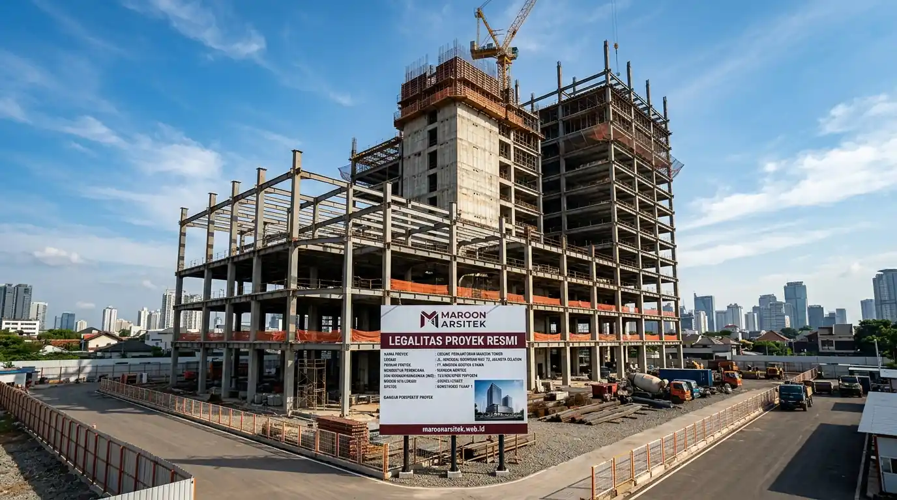

Memilih kontraktor gedung bertingkat memerlukan pemeriksaan izin usaha konstruksi, klasifikasi kualifikasi badan usaha, dan pengalaman menangani proyek dengan skala setara sebelum kontrak kerja disepakati. Maroon Arsitek melengkapi setiap proyek gedung dengan dokumen legalitas yang dapat diverifikasi klien sejak tahap awal kerja sama, memberikan kepastian hukum bagi pengusaha yang membutuhkan kontraktor berskala besar.
Kompleksitas proyek gedung bertingkat menuntut ketelitian ekstra dalam memilih kontraktor, karena kesalahan pada aspek legalitas maupun teknis dapat berdampak signifikan terhadap kelangsungan dan keamanan proyek secara keseluruhan. Bagian berikut menguraikan langkah verifikasi yang perlu dilakukan sebelum menunjuk kontraktor gedung.
Verifikasi Klasifikasi dan Kualifikasi Badan Usaha Konstruksi
Klasifikasi dan kualifikasi badan usaha konstruksi menentukan jenis dan skala proyek yang dapat ditangani oleh sebuah kontraktor, sehingga verifikasi terhadap dokumen ini menjadi langkah pertama sebelum menunjuk kontraktor untuk proyek gedung bertingkat. Maroon Arsitek memiliki kualifikasi yang sesuai untuk menangani proyek gedung komersial berskala menengah hingga besar.
Klasifikasi badan usaha mencerminkan kapasitas teknis dan finansial kontraktor dalam menangani proyek dengan kompleksitas tertentu, sehingga klien perlu memastikan klasifikasi yang dimiliki kontraktor sesuai dengan skala proyek gedung yang direncanakan.
Verifikasi ini dapat dilakukan melalui pengecekan dokumen resmi yang diterbitkan oleh lembaga berwenang, memberikan kepastian bahwa kontraktor yang dipilih benar-benar memenuhi syarat untuk menangani proyek berskala besar sesuai regulasi yang berlaku.
Kesesuaian Skala Proyek dengan Kapasitas Kontraktor
Kebutuhan kepastian kapasitas dijawab melalui pencocokan skala proyek gedung yang direncanakan dengan kualifikasi dan pengalaman kontraktor pada proyek-proyek sejenis yang pernah ditangani sebelumnya.
Kesesuaian ini penting untuk memastikan kontraktor memiliki kapasitas sumber daya, baik tenaga ahli maupun peralatan, yang memadai untuk menyelesaikan proyek gedung bertingkat sesuai standar dan jadwal yang direncanakan.
Pemeriksaan Asuransi Konstruksi dan Tanggung Jawab Risiko
Asuransi konstruksi menjadi aspek penting yang perlu diperiksa sebelum menunjuk kontraktor gedung, karena proyek berskala besar memiliki risiko operasional yang lebih tinggi dibanding proyek hunian sederhana, sehingga perlindungan risiko menjadi kebutuhan mutlak. Maroon Arsitek melengkapi setiap proyek gedung dengan asuransi yang menanggung risiko selama masa konstruksi berlangsung.
Cakupan asuransi konstruksi umumnya mencakup risiko kerusakan bangunan dalam proses pembangunan serta risiko kecelakaan kerja, memberikan perlindungan finansial bagi klien apabila terjadi insiden yang berada di luar kendali selama proyek berlangsung.

Klien disarankan meminta salinan polis asuransi sebelum kontrak kerja ditandatangani, memastikan cakupan perlindungan yang ditawarkan benar-benar sesuai dengan skala risiko proyek gedung yang akan dikerjakan.
Cakupan Perlindungan yang Perlu Dipastikan Sebelum Kontrak
Kebutuhan kepastian perlindungan risiko dijawab melalui pemeriksaan cakupan polis asuransi konstruksi, mencakup jenis risiko yang ditanggung dan batas nilai pertanggungan yang sesuai dengan skala proyek gedung yang direncanakan.
Pemastian ini menjadi langkah penting bagi klien untuk menghindari potensi kerugian finansial yang tidak tertanggung apabila terjadi insiden di luar perkiraan selama proses konstruksi gedung berlangsung.
Rekam Jejak Penyelesaian Proyek Gedung Tepat Waktu
Rekam jejak kontraktor dalam menyelesaikan proyek gedung sesuai jadwal yang disepakati menjadi indikator penting kapasitas manajemen proyek, terutama bagi pengusaha yang membutuhkan gedung selesai sesuai target operasional bisnis. Maroon Arsitek menerapkan sistem manajemen proyek yang konsisten untuk menjaga ketepatan waktu penyelesaian setiap proyek gedung bersama tim jasa kontraktor bangunan kami.
Evaluasi rekam jejak dapat dilakukan melalui referensi proyek sebelumnya, memberikan gambaran mengenai kemampuan kontraktor mengelola jadwal, sumber daya, dan koordinasi antar tim dalam proyek berskala besar dengan kompleksitas tinggi.
Sistem manajemen proyek yang matang turut mencakup mitigasi risiko keterlambatan, termasuk perencanaan cadangan sumber daya apabila ditemukan kendala teknis yang berpotensi memengaruhi jadwal penyelesaian proyek gedung.
Mitigasi Risiko Keterlambatan melalui Perencanaan Cadangan
Kebutuhan kepastian jadwal dijawab melalui perencanaan cadangan sumber daya sejak awal proyek, sehingga kendala teknis yang muncul selama konstruksi dapat segera ditangani tanpa berdampak signifikan terhadap keseluruhan jadwal penyelesaian gedung.
Perencanaan cadangan ini menjadi bagian dari sistem manajemen proyek yang matang, membantu menjaga komitmen jadwal yang telah disepakati meski dihadapkan pada kondisi lapangan yang tidak selalu sesuai perkiraan awal.